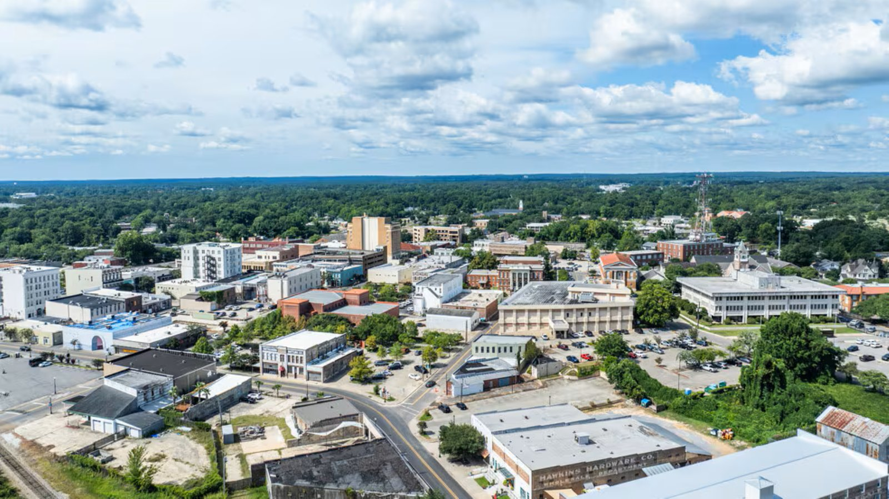

Tile Installation in Petal, MS
Just across the Leaf River from downtown Hattiesburg, Petal is one of the fastest-growing communities in the Pine Belt. We install bathroom, kitchen, shower, floor, and patio tile for homeowners here.
Tile Work for Petal's Growing Neighborhoods
Petal has grown steadily as a bedroom community for Hattiesburg, with a steady mix of newer subdivisions and established mid-century neighborhoods spread along Hwy 42 and around the Petal River Walk. That mix means the tile projects we take on here run the full range — from updating a builder-grade bathroom in a newer home to replacing worn flooring in an older ranch house near downtown Petal.
Whatever stage your home is at, we handle the same core work in Petal that we do throughout the Hattiesburg area: bathroom and shower remodels, kitchen backsplashes, whole-room floor tile, and outdoor patio tile built to handle south Mississippi humidity.
Why Petal Homeowners Call Us
Minutes From Hattiesburg
Petal's short commute across the Leaf River means fast response times for quotes and scheduling.
Experience With New Builds
We're familiar with the builder-grade tile common in Petal's newer subdivisions and how to upgrade it.
Older Home Know-How
We're comfortable working around the uneven subfloors and layouts common in Petal's established neighborhoods.
Fast, Free Quotes
Call or fill out our form and hear back from us promptly about your Petal tile project.
Petal Tile Installation FAQ
Do you serve all of Petal, including areas near Tatum Park?
Yes, we work throughout Petal — from the neighborhoods near Tatum Park to areas along Hwy 42 and the Petal River Walk.
Can you match tile in a newer Petal subdivision home?
In many cases, yes, though exact discontinued builder tile isn't always available. We can help you find a close match or suggest a full-room replacement for the cleanest result.
How quickly can I get a quote for a Petal project?
Petal's short distance from Hattiesburg means we can typically schedule an estimate quickly. Call or submit our form to get started.
Tile Services Available in Petal
More Pine Belt Service Areas
Ready for Your Petal Tile Project?
Get a fast, free quote from the crew doing the work.
Tile Installation in Petal, MS
We install tile in Petal, Mississippi — Hattiesburg's twin city just across the Leaf River. If you've searched for a "tile installer in Petal," a "Petal tile contractor near me," or a "bathroom remodel Petal MS," we do the work ourselves, no subcontracted crews. Because Petal is only a few miles from our Hattiesburg home base, it's prime territory for us, and we install tile for everything from established neighborhoods to Petal's newer subdivisions.
Our Petal tile services include bathroom tile, custom shower tile, kitchen tile and backsplashes, floor tile (porcelain, ceramic, natural stone, and wood-look plank), and patio and outdoor tile.
Tile Services in Petal
- Bathroom tile installation and bathroom remodels
- Custom shower tile and walk-in showers
- Kitchen tile and backsplash installation
- Floor tile — porcelain, ceramic, stone, and plank
- Patio and outdoor tile
Call (941) 564-5088 or send over your project for a free quote on tile installation in Petal, MS.